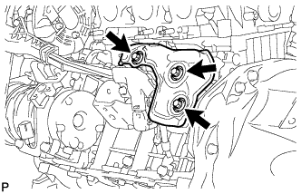

СТАРТЕР > СНЯТИЕ |
| 1. ОТСОЕДИНИТЕ ПРОВОД ОТ ОТРИЦАТЕЛЬНОГО ВЫВОДА АККУМУЛЯТОРНОЙ БАТАРЕИ |
| 2. СНИМИТЕ ЛЕВЫЙ ВЫПУСКНОЙ КОЛЛЕКТОР В СБОРЕ |
Снимите левый выпускной коллектор в сборе (Нажмите здесь).
| 3. СНИМИТЕ КРЫШКУ СТАРТЕРА |
|  |
Выверните 3 болта и снимите крышку стартера.
| 4. СНИМИТЕ СТАРТЕР В СБОРЕ |
 |
Выверните болт и отсоедините провод соединения с массой.
Отсоедините разъем стартера.
Откройте крышку контакта.
Отверните гайку, выверните болт и отсоедините провод стартера.
 |
Выверните 2 болта и снимите стартер.
| 5. СНИМИТЕ БОКОВУЮ КРЫШКУ КАРТЕРА МАХОВИКА |
 |